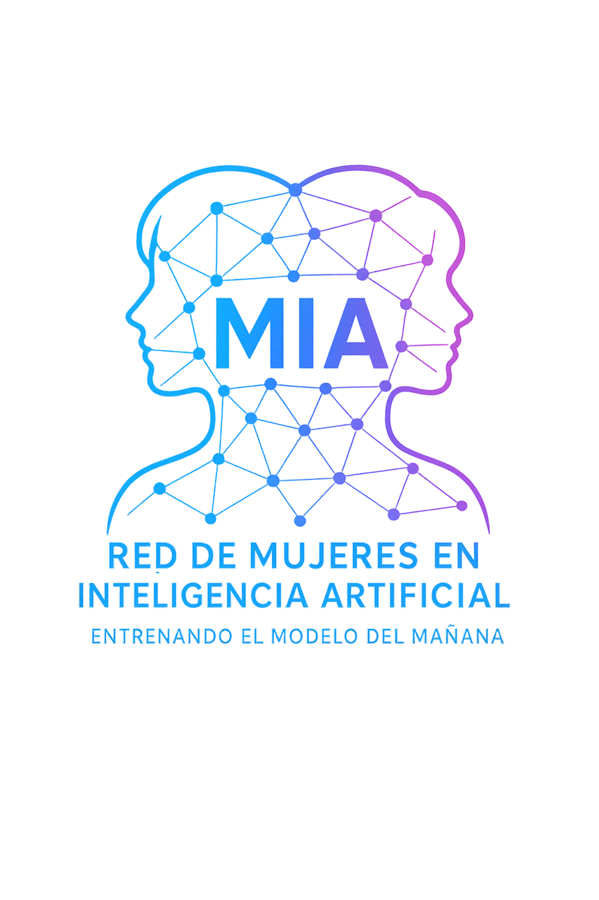

{RED} MIA
Red de Mujeres en Inteligencia Artificial
Nodos en una red neuronal
En 2025 comienza a entrelazarse un grupo de mujeres con un impulso común: la Inteligencia Artificial. De esa primera sinapsis brota la idea de conectar a más mujeres que trabajen o se formen en cualquier ámbito de la IA.
Somos ingenieras, economistas, tecnólogas, sanitarias, educadoras, periodistas, escritoras, profesionales del derecho y muchos más perfiles, de diferentes partes del mundo, unidas para visibilizar, impulsar y conectar a mujeres en IA.
Qué podemos hacer por ti
Ampliar tus conocimientos
Accede a formaciones, eventos y recursos compartidos por la comunidad
Ganar visibilidad
Presenta tus proyectos, conecta con referentes y haz crecer tu red profesional
Colaborar y marcar el cambio
Participa en grupos de trabajo y contribuye a una industria más igualitaria
Qué hacemos juntas
Cada mes celebramos un encuentro online abierto a todas las integrantes, con actividades que fomentan la conexión y el aprendizaje.
Speed networking
Conoce a otras MIAs en conversaciones breves y dinámicas
Proyectos de la red
Breves presentaciones de proyectos de las participantes
Eventos y formaciones
Oportunidades, cursos y conferencias del sector
Actualidad IA
Debate y reflexión sobre IA y el papel de la mujer
Grupos de trabajo
Además de los encuentros mensuales, la red se organiza en grupos temáticos. Puedes participar en uno, varios o ninguno.
Eventos y formaciones
Identificamos y difundimos oportunidades de formación, talleres y conferencias.
Redes sociales
Damos visibilidad a la red y a sus integrantes en nuestros canales digitales.
Medios y prensa
Gestionamos la relación con medios y la presencia pública de la red.
Bienvenida y atención
Acogemos a las nuevas integrantes y les ayudamos a integrarse en la comunidad.
Nuestra hoja de ruta
Lanzamiento y activación
- Definir y dar a conocer la {RED} MIA
- Crear identidad y presencia digital
- Establecer alianzas iniciales
- Lanzar un evento de presentación para activar la comunidad
Consolidación y expansión
- Consolidar la comunidad y sus canales de comunicación
- Construir y dar visibilidad a los grupos de trabajo
- Organizar eventos periódicos de divulgación y networking
- Fortalecer alianzas con universidades y entidades tecnológicas
- Celebrar el primer gran evento de la red
Proyección e impacto global
- Formalizar la red y crear un consejo o asociación
- Publicar informe anual sobre mujeres y tecnología
- Crecer a nivel internacional
- Organizar el primer encuentro híbrido mundial
Voces de la red
Encontrar un espacio donde compartir inquietudes sobre IA con otras mujeres ha sido inspirador. Aquí no sólo aprendo, sino que me siento acompañada.— Participante de la red
Lo que más valoro es la diversidad de perfiles: ingenieras, comunicadoras, docentes, investigadoras... Todas sumamos perspectivas diferentes y eso enriquece cada encuentro.— Participante de la red
Gracias a la red he descubierto eventos, herramientas y contactos que no habría conocido de otra forma. Es como tener un radar colectivo.— Participante de la red
Forma parte de nuestra
lista de correo
Para que te lleguen las convocatorias de reuniones, eventos y toda la actividad de la red.
Completar formulario